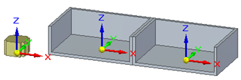
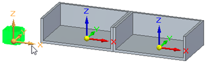
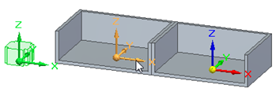
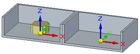

Create a Match Coordinate Systems as a single relation
-
Insert a part into an assembly.

-
On the Assemble command bar, set the Relationship Types to Match Coordinate Systems, and set the Single Coordinate System Constraint option .
-
Select the source coordinate system.

-
Select the target coordinate system.

The coordinate systems are matched.
